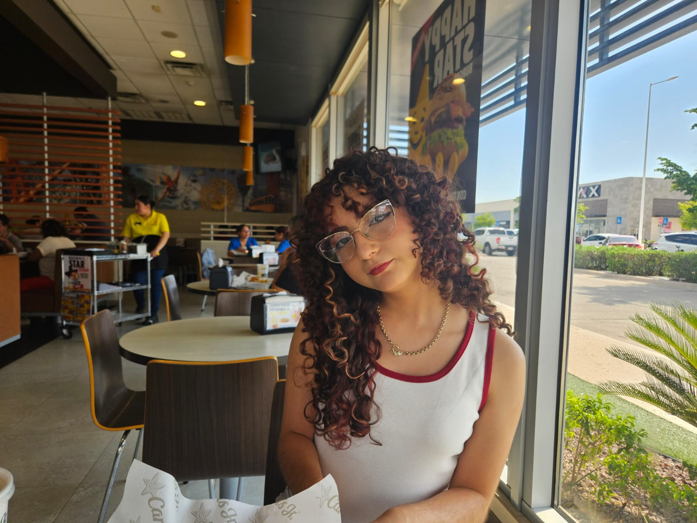

Sobre mi
Hola soy Jos estudiante universitaria, futura ingeniera en Software, lleve programación en la preparatoria y es algo que me gusta mucho. Desarrolle pequeños proyectos Relacionados al registro de usuarios en sitios bibliotecarios y de registro de asistencia
